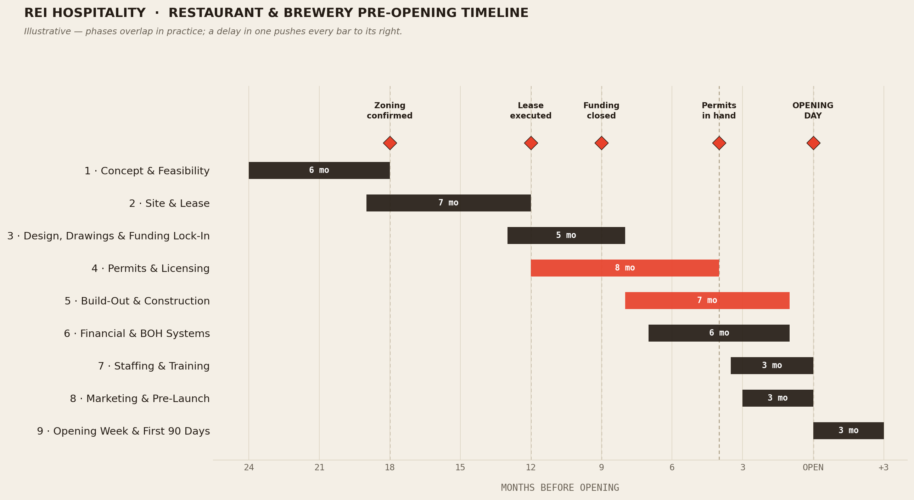

The full timeline, the master checklist, and the guide behind them — concept through opening night, for restaurants and breweries. Read it here, or grab the PDF below.
Built for a full ground-up or heavy-renovation project. A lighter-lift build compresses; a brewery or entertainment concept usually stretches — mostly in Phase 4, where licensing lives.

Phases run concurrently, not back-to-back — and a slip in one bar drags every bar downstream of it. No phase on this chart fails quietly: a missed gate in month 18 shows up as a missed opening a year later.
The actionable spine of the whole project, organized by phase. Part 3 below explains why each line matters and what a real one looks like.
Same content, formatted to print or forward to a partner, contractor, or lender. Drop your email and it's yours.
What follows explains the checklist above — the reasoning, the real templates, and worked examples. Not the how-to-execute-it, but enough substance to actually be useful.
A usable customer profile isn't a demographic label like "25–45, suburban." It's specific enough that you could picture the person walking in. At minimum it defines: who they are (age range, household type, income band), the occasion (weekly regular vs. special occasion vs. pre/post-event), spend per visit and how often they return, and the one reason they choose you over the place next door.
That level of specificity is what actually drives menu pricing, seat count, and hours — a vague label doesn't.
Illustrative numbers at a $6M annual net sales scenario — the categories and relationships matter more than the exact figures:
| Line | $ | % of Net Sales |
|---|---|---|
| Food sales | $1,836,000 | 30.6% |
| Beer, liquor & wine sales | $4,009,000 | 66.8% |
| Other (retail, cover, events) | $275,000 | 4.6% |
| Comps & discounts | ($120,000) | (2.0%) |
| Net Sales | $6,000,000 | 100% |
| Cost of goods sold | $1,134,000 | 18.9% |
| Total labor | $1,456,000 | 24.3% |
| Prime Cost (COGS + Labor) | $2,590,000 | 43.2% |
| Operating expenses | ~$1,500,000 | ~25% |
| Cash flow before debt service / rent | ~$1,900,000 | ~32% |
The number worth watching isn't net sales — it's prime cost as a percentage of sales. That same concept run near breakeven volume might show prime cost closer to 50–52%; at strong volume it can run 38–42%. That swing between scenarios — not the top-line number — is what determines whether an investor's return target actually gets hit. This is why Phase 1 should model at least a breakeven case and a target case side by side, not a single projection.
Say total project cost (build-out + equipment + opening working capital) runs $2,000,000. Financed 65% debt / 35% equity means a $1,300,000 loan and $700,000 of equity at risk. An SBA 7(a) loan specifically requires the use of proceeds broken into buckets — real estate, construction, equipment, working capital, debt refinancing — plus estimated jobs created/retained, and full ownership disclosure for every equity holder, not just the majority owner. Knowing this structure before applying saves a round of back-and-forth with a lender.
Cash-on-cash return = annual pre-tax cash flow ÷ total cash invested (the equity piece, not the debt). On $700,000 of equity, $150,000 of annual cash flow after debt service is a ~21% cash-on-cash return; $70,000 is 10%. The leverage decision — how much debt vs. equity — moves that ratio more than almost anything else in the deal.
NON-STANDARD CONCEPTS
Brewpub — TTB + state ABC brewery licensing and a retail/restaurant liquor license overlapping on the same footprint; production and consumption areas often have separate code requirements.
Virtual golf / simulator concepts — amusement/entertainment licensing on top of F&B licensing, AV and low-voltage build-out as its own trade, liability insurance considerations specific to simulator use.
A real Location Data Report is more rigorous than most first-time operators expect: demographics at multiple rings out (commonly 1, 3, 5, and 10 miles), traffic counts (real site work often means physically counting cars for a set window every hour across a full week, in both directions — not just pulling a municipal estimate), activity generation nearby (offices, medical, schools, entertainment, transportation hubs), accessibility mapping (physical barriers that quietly cut off a trade area: divided highways, railroad tracks, rivers, large open space), and competitive mapping. Skipping this is the single most common "why did we pick this corner" regret.
| Term | What a real one looks like |
|---|---|
| Length & renewal | 10-year term, three 5-year options, ~10% rent step at each renewal |
| Base rent | $30/rentable SF NNN, stepped 10% every 5 years |
| Due diligence period | ~30 days from LOI execution to confirm feasibility before you're locked in |
| TI allowance | $50/SF — paid only after CO, proof of opening, GC lien waivers, as-built CAD, first month's rent |
| Rent commencement | Earlier of opening or 180 days after lease execution / permit receipt |
| CAM / taxes | $2.50 CAM + $5.00 tax per SF, trued up annually |
The gap between "TI committed" and "TI in hand" is one of the most common cash-flow surprises for first-time operators — budget your own capital to bridge it.
A direct conversation with the local zoning/planning department to confirm your concept is a permitted use — before you sign anything or spend on design. Reason it matters, concretely: zoning parking ratios are frequently written around a standard restaurant, not a brewery/entertainment hybrid with a different patron-floor-area-to-seating ratio.
Confirming this before signing, not after, is the difference between a delay and a dead deal.
| Task | Typical duration | What it produces |
|---|---|---|
| 1. Design (schematic) | 5–6 weeks, 1 meeting | Floor plan, mood/material boards, initial renderings |
| 2. Production (permit + CDs) | 6–10 weeks, several meetings | Full stamped set: floor plans, RCP, roof plan, elevations, F&B equipment, millwork, MEP/structural coordination |
| 3. Construction administration | Duration of build, 4–5 site visits | Site visits at defined intervals (e.g., 30/60/90-day marks), a banked hour allotment |
On a renovation in the $5–6M range, a full architectural fee (across all three tasks) commonly lands in the 3–4% of construction cost range, with MEP engineering as a separate line often quoted as a range (e.g., $64,000–$74,000) until scope is fully defined. Zoning/variance representation is commonly excluded from that scope entirely — a separate, separately billed addendum. That's a second, structural reason the zoning conversation in Phase 2 can't be outsourced to "the architect will handle it."
| Item | Typical lead time |
|---|---|
| Switchgear | ~12 weeks |
| Kitchen equipment package | ~12 weeks |
| Rooftop HVAC units | ~10 weeks |
| Millwork / custom casework | ~10 weeks |
| Lighting controls | ~10 weeks |
| Fire alarm panel & devices | ~8 weeks |
| HVAC controls | ~8 weeks |
| Grease interceptor | ~8 weeks |
Every one of these carries its own submittal-review-and-approval cycle before the lead-time clock even starts. Miss flagging these during design and they — not the trade work on-site — become the reason opening slips by months, not weeks.
Funding lock-in needs to actually close here, not just be "in progress." Design and permitting commitments are hard to unwind once made.
Zoning permit and building/fire permits — top of the list, and for larger builds routinely the longest pole in the tent.
Applications are commonly rejected outright if incomplete, with local approvals (zoning sign-off, fire marshal, town clerk certification) often required before a state agency will even accept the filing. Many states use a public-notice/"placarding" process before a permit can move forward — a placarding error alone can add two or more months. For breweries specifically: expect two licensing tracks in sequence, not parallel — TTB federal approval, then a state manufacturer/brew-pub permit that often requires proof of the federal approval already in hand. Filing fees themselves are modest (commonly $400–$1,600 depending on permit type); the real cost is the multi-month timeline risk, not the fee.
The permit sequencing trap — variance/special-exception approval often has to be secured before formal permit applications will even be accepted, and both usually require finished drawings. This is exactly why Phase 3 has to close before Phase 4 can meaningfully start.
| Scope item checked | Contractor A | Contractor B | Contractor C |
|---|---|---|---|
| Demo per drawings | Yes | Yes | Yes |
| Stamped/calc'd shop drawings | Yes | Yes | Yes |
| Materials meet spec | Yes | Yes | Yes |
| Full field coordination w/ other trades | Yes | Yes | Yes |
| Meets stated duration | Yes | Yes | Yes |
| Submittals, as-builts, O&Ms included | Yes | Yes | Yes |
| All taxes included | Yes | Yes | Yes |
| Leveled base bid | $84,000 | $70,000 | $75,000 |
Two bids that look $15,000 apart on the cover page can be identical in true scope once leveled — or wildly different. You can't tell which without a checklist like this one. The same principle applies to sitework bids, which routinely reveal missing scope that only shows up when bids are laid side by side line by line.
Consider a project manager / owner's representative distinct from your GC — someone whose incentive lines up with your schedule and budget, not the trade's. Their real value: leveling bids (above), running value-engineering conversations before award instead of after (when it becomes a change order), and building a genuine baseline schedule with a critical path. Even with a PM engaged, the owner is typically still the one submitting permit applications, procuring FF&E, and approving finish/material selections — a PM manages the schedule, not your decisions.
Framing layout needs architect/owner sign-off before the next trade proceeds; underslab utility work needs inspection before backfill and concrete; structural steel and mezzanine work often has its own inspection gate before it can be enclosed. Each of these is a real stop-work point, not a formality — and each is exactly what a tracked RFI/change-order log is supposed to catch before it becomes a two-week delay.
WHERE THIS GOES WRONG (PHASES 2–5)
Signing a lease before confirming zoning · committing to equipment before MEP drawings are final · treating a TI allowance as available cash · underestimating liquor license timing · assuming your architect covers zoning/variance work · letting a GC's optimistic schedule stand in for a real one · missing long-lead items until construction is underway · discovering a utility requirement after sitework is "final."
More granular than most first-time operators expect. A real restaurant chart of accounts separates, for example, cash on hand from a change bank from petty cash from the main operating account — each its own GL line — and breaks out every revenue and cost category the same way the pro forma does in Phase 1. Setting this up before you're taking in cash is what makes your first real P&L usable instead of a reconstruction project three months in.
| Coverage | Typical limit |
|---|---|
| General liability | $1M per occurrence / $2M aggregate |
| Auto liability | $1M combined single limit |
| Umbrella / excess liability | $1M per occurrence/aggregate, over a $10K retention |
| Workers' compensation | Statutory + $1M employer's liability |
Landlords and GCs are also commonly named as "additional insured" with a waiver of subrogation and "primary and non-contributory" status — a specific endorsement your broker has to add, not something that happens automatically by having a policy.
A real vendor credit application asks for business ownership/tax ID info, bank references, and trade references, and often includes a security interest/UCC lien against business assets as a condition of extending credit — with financial statements required above a purchase-volume threshold (commonly ~$25,000/month). Budget the time; it's more paperwork than a simple order form.
A standardized recipe card specifies exact quantities, a yield percentage (accounting for prep loss), and often a specific portioning tool — a numbered scoop/disher size, for example — so cost and portion consistency don't depend on any one cook's judgment call. A card without a yield % and a named portioning tool isn't actually controlling cost, it's just a list of ingredients.
Signage, HVAC/mechanical, AV/sound, dish and warewashing, kitchen and bar equipment, draft beer systems (if applicable), CO2, glycol chiller (if brewing), electrical, network/security, flooring, fire suppression, POS. POS hardware ordering commonly requires a dedicated site survey first — a step people forget to schedule early enough.
Shares a few features: it commonly runs 6–8 weeks, starting in the front-of-house before moving into full management responsibility, with a defined "transition" week before they're on their own. It runs in a validated, certified training location — a specific restaurant confirmed ready to train someone — not an ad hoc "shadow whoever's around." A formal orientation (handbook, facility tour, values/culture) sets expectations on day one. And it includes structured check-ins on a cadence — weekly during training, then 30/60/90-day check-ins after they're placed — which catch a struggling hire months before an ad hoc approach would notice.
| Day | Focus | Gate to pass |
|---|---|---|
| 0 | Orientation, handbook, facility tour | General knowledge quiz |
| 0.5 | Combined food & drink class + bar walkthrough | Safety/sanitation + menu quizzes |
| 1 | Follow #1 — shadow a coach | Short quiz |
| 2 | Follow #2 + expo assist | Cumulative quiz |
| 3 | Follow #3 + drink expo | Cumulative quiz |
| 4 | Follow #4 + one-table reverse follow | Final study day |
| 5 | Validation shift — mock table service, evaluated | Minimum ~90% to work solo |
The structure works because it front-loads a manageable amount of new information each day instead of dumping everything on day one, and it ends with an actual competency check instead of just "time served."
Illustrative — spans roughly the period from a few months out through six weeks post-opening:
| Category | % of budget | Notes |
|---|---|---|
| Outdoor / billboards | ~25% | Highest single line in most plans |
| Branding & creative | ~20% | Logo, photography, brand assets |
| Local radio | ~13% | |
| Website | ~10% | |
| Local transit / print | ~8% | |
| Paid social ads | ~8% | |
| Grand-opening giveaways | ~4% | |
| Ad copy / photoshoots | ~4% | |
| Video | ~3% | |
| Social media management | ~2% | Ongoing monthly, not one-time |
| PR | Often $0 cash | Still needs someone's time — budget the hours |
Treating this as a single "marketing" line instead of these distinct categories is how first-time operators either overspend one channel or leave real gaps in others.
| When | What happens |
|---|---|
| ~2 weeks out | Friends & family invites distributed; every checklist above closed; petty cash and banking live on-site; staff have passed their validation shift |
| ~1 week out | Friends & family event; final systems check |
| Opening day | — |
| +30 days | Actual costs reconciled against the Phase 1 pro forma |
| +90 days | Staff retention check-in; cash flow monitored against plan |
We handle the how — from the first feasibility conversation through opening night and everything after. If you're staring down this list and want a second set of hands, that's the job.
Let's talk →